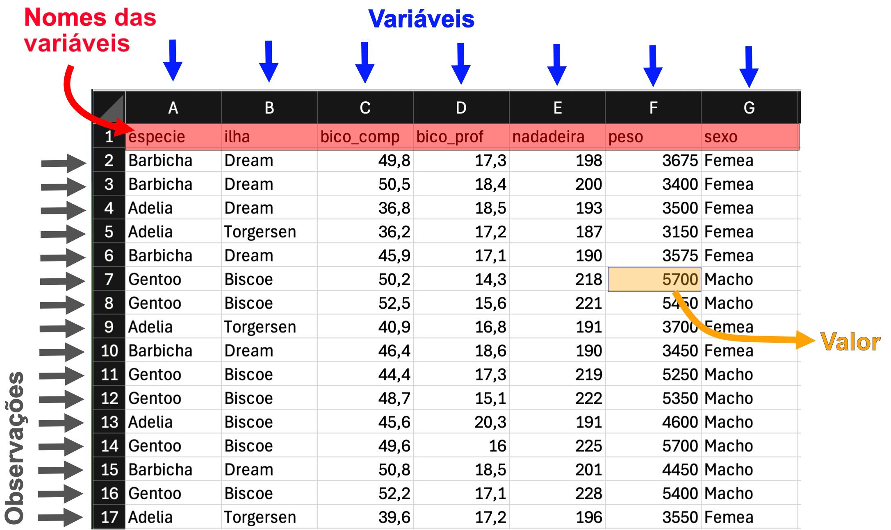

A forma de se organizar um conjunto de dados é muito importante, e pode facilitar muito a compreensão da forma como se irá analisar os dados dados. Existem muitas formas como os dados serão organizados e planilhados, o que pode mudar dependendo da área de pesquisa.
Em um passo inicial, provavelmente os dados serão tabulados em papel ou utilizando uma planlha em um software como Excel, Planilhas do Google ou similar. A organização desses dados muitas vezes depende da área de pesquisa. Entretanto, na hora de se analisar os dados, é necessário aplicar algum sistema de organização que facilite a filtragem, reorganização (data wrangling), preparação de gráficos, estatísticas descritivas e inferência estatística. Podemos chamar esse tipo de conjunto de dados de dados organizados ou tidy data(Wickham et al., 2023).
Cada observação é representada por uma linha e cada linha representa uma observação;
Cada valor está contido em uma única célula e cada célula contém somente um valor.

Figura 3.1: Variáveis, observações e valores
Uma variável é uma característica de interesse medida nas unidades amostrais. Exemplos: peso, altura, sexo, espécie. As variáveis podem ser numéricas quando podem ser medidas em escala quantitativa. As variáveis numéricas podem ser divididas em contínuas, quando podem assumir valores reais dentro de uma escala, ou discretas, quando só podem assumir números inteiros. Além disso, as variáveis podem ser categóricas (ou qualitativas) quando expressam uma classificação de observações em algum agrupamento (por exemplo, sexo ou espécie). As variáveis categóricas podem ser ordinais quando existe uma ordem entre as categorias (por exemplo, ensino fundamental, médio e superior).
Observe os conjuntos de dados abaixo (Tabela 3.1):
Tabela 3.1: formas diferentes de se exibir um mesmo conjunto de dados
(a) tabela a
especie
sexo
peso_medio
Adelia
Femea
3368.836
Adelia
Macho
4043.493
Barbicha
Femea
3527.206
Barbicha
Macho
3938.971
Gentoo
Femea
4679.741
Gentoo
Macho
5484.836
(b) tabela b
especie
Femea
Macho
Adelia
3368.836
4043.493
Barbicha
3527.206
3938.971
Gentoo
4679.741
5484.836
Você pode observar que as duas tabelas exibem as mesmas informações. Entretanto, somente a tabela a apresenta está devidamente organizada como tidy data, apresentando somente uma variável por coluna e uma observação por linha.
3.2 Importando dados
O R é capaz de importar dados em diferentes formatos. Funções da família read.table() permitem importar diversos tipos de conjuntos de dados separados por tabulações ou separados por vírgula (.csv, com as funções read.csv() e read.csv2()). Existem pacotes que permitem a importação de tabelas do Excel, e de diversas outras formas. Neste tutorial, vamos importar os dados diretamente do excel utilizando o pacote readxl.
3.2.1 Criando uma pasta de trabalho
Primeiramente, sempre que queremos começar uma nova análise, é interessante criar uma pasta de trabalho no computador, onde colocamos nossos conjuntos de dados, scripts, etc. No exemplo, foi criada uma pasta contendo somente o arquivo excel a ser importado e o script referente às análises Figura 3.2 .
Figura 3.2: Organizando diretório para análises
3.2.2 Definindo diretório de trabalho
Podemos definir pasta de trabalho no RStudio no menu Session > Set Working Directory > Choose Directory… e escolher a pasta de trabalho desejada (Figura 3.3)
Figura 3.3: Definindo diretório de trabalho
O diretório de trabalho pode ser definido utilizando linhas de comando. Podemos usar a função setwd() para definir o diretório de trabalho:
setwd("/Users/fernandofarache/Documents/R_work/Aula02") # escolher a pasta de trabalhosetwd(choose.dir()) #você pode usar choose.dir() para escolher o diretório clicando nele.
Ao escolher o diretório, podemos usar a função getwd() para descobrir se estamos mesmo no diretório certo. A função dir() permite descobrirmos se nossos arquivos estão mesmo lá.
getwd() # descobrir em qual pasta estamosdir()#observa os arquivos disponíveis na minha pasta
3.2.3 Importando arquivos Excel
O pacote readxl oferece funções para a leitura direta de arquivos Excel. Podemos importar a aba pinguins do arquivo Bioestat_PPGBio.xlsx. Atenção: o arquivo .xlsx deve estar no diretório de trabalho, ou o caminho para o diretório contendo a pasta deve ser indicado:
library(readxl) # abrir o pacote para utilizá-lopinguins <-read_excel("dados_R.xlsx", sheet ="pinguins") #importar a aba "pinguins" do arquivo Bioestat_PPGBio.xlsx
3.2.4 Importando arquivos fora do diretório de trabalho
Podemos importar um arquivo a partir de qualquer diretório do computador, e nào somente do diretório de trabalho. Sendo assim, não é necessário ter definido um diretório de trabalho, como no exemplo abaixo:
A importação de arquivos Excel pode ser realizada em de forma fácil no RStudio seguindo os seguintes passos(Figura 3.4).
Acessar aba Environment;
Clicar no ícone Import Dataset;
Ir em From Excel;
Selecionar o arquivo em Browse;
Selecionar a aba do arquivo (quando ouver mais de uma) no campo Sheet;
Criar um nome para o objeto em Name;
Clicar no botão Import.
Figura 3.4: Importando arquivos excel utilizando a interface RStudio. Os passos de 1 a 7 estão ilustrados na figura.
3.2.6 Copiando e colando os dados
Conjuntos de dados podem ser importados para o R pelo método “copia e cola” para isso:
Selecione as linhas e colunas da planilha que deseja copiar;
No R, execute o seguinte comando para colar os dados da área de transferência como um objeto no R:
dados <-read.delim2("clipboard")#em mac:dados <-read.delim2(pipe("pbpaste"))
3.2.7 Visualização geral do conjunto de dados
Após realizar a importação, é muito importante verificar se não houveram problemas na importação. podemos utilizar algumas funções para verificar a estrutura dos dados. Uma função excelente para isso é a função str():
O objeto pinguins foi importado formato tibble. Esta é uma versão versão adaptada dos data frames em R que oferece algumas vantagens em relação aos data frames tradicionais, mas em geral podemos trabalhar com eles da mesma forma que fizemos co mdata frames no capítulo anterior.
Ao observar o str(), é importante verificarmos por exemplo:
Se o número de linhas e colunas está correto;
Se o tipo de variável (caracteres, numéricas) está correto.
Diversas funções já conhecidas podem nos dar algumas informações sobre o conjunto de dados. Para isso, podemos:
Digitar o nome do objeto ou utilizar a função View() para visualizá-lo (pelo menos as primeiras linhas);
utilizar head() ou tail() para visualizar as primeiras linhas e últimas linhas do objeto.
Utilizar colnames() para verificar os nomes das colunas (variáveis).
Utilizar ncol(), nrow(), ou dim() para verificar o número de linhas e colunas
pinguins # visualiza o objeto pinguins no consoleView(pinguins) # abre o conjunto de dados em uma abahead(pinguins) # ver as primeiras observaçõestail(pinguins)# ver as últimas observaçõescolnames(pinguins) # ver nomes das colunasncol(pinguins) # número de colunasnrow(pinguins) # número de linhasdim(pinguins) # Dimensões do objeto (linhas e colunas)
Podemos utilizar a função table() para ter informações mais detalhadas sobre variáveis categóricas. Abaixo vamos:
Contar quantas observações (linhas) temos para cada espécie;
Contar quantas observações temos para cada espécie e sexo:
table(pinguins$especie)
Adelia Barbicha Gentoo
146 68 119
with(pinguins, table(especie, sexo)) # ou table(pinguins$especie, pinguins$sexo)
sexo
especie Femea Macho
Adelia 73 73
Barbicha 34 34
Gentoo 58 61
A função summary() fornece um resumo sobre a planilha:
summary(pinguins) # resumo da planilha
especie ilha bico_comp bico_prof
Length:333 Length:333 Min. :32.10 Min. :13.10
Class :character Class :character 1st Qu.:39.50 1st Qu.:15.60
Mode :character Mode :character Median :44.50 Median :17.30
Mean :43.99 Mean :17.16
3rd Qu.:48.60 3rd Qu.:18.70
Max. :59.60 Max. :21.50
nadadeira peso sexo
Min. :172 Min. :2700 Length:333
1st Qu.:190 1st Qu.:3550 Class :character
Median :197 Median :4050 Mode :character
Mean :201 Mean :4207
3rd Qu.:213 3rd Qu.:4775
Max. :231 Max. :6300
No summary ou sumário da planilha podemos ver um resumo de cada variável do conjunto de dados. Para variáveis contínuas, Podemos observar medidas descritivas das variáveis contínuas, como valor mínimo e máximo, quartis, média e mediana.
3.2.8 Alterando classe de variáveis
Vamos transformar as variavies categóricas em fatores com a função as.factor():
especie ilha bico_comp bico_prof nadadeira
Adelia :146 Biscoe :163 Min. :32.10 Min. :13.10 Min. :172
Barbicha: 68 Dream :123 1st Qu.:39.50 1st Qu.:15.60 1st Qu.:190
Gentoo :119 Torgersen: 47 Median :44.50 Median :17.30 Median :197
Mean :43.99 Mean :17.16 Mean :201
3rd Qu.:48.60 3rd Qu.:18.70 3rd Qu.:213
Max. :59.60 Max. :21.50 Max. :231
peso sexo
Min. :2700 Femea:165
1st Qu.:3550 Macho:168
Median :4050
Mean :4207
3rd Qu.:4775
Max. :6300
Observe que agora temos mais informações sobre as variáveis categóricas.
3.3 Dados faltantes
Dados faltantes são valores ausentes em um conjunto de dados, que podem ocorrer por diversas razões, como erros na coleta de dados, falhas técnicas, respostas não fornecidas por participantes em uma pesquisa, entre outros. Eles podem ser representados por células vazias em uma planilha ou por algum termo (por exemplo, “NA”). deve-se ter cuidado ao importar esses dados no R para que sejam lidos como dados faltantes e nào como texto.
Vamos ler a planilha dados_problemas. Se você observar o conjunto de dados antes de importar, verá que a coluna diâmetro apresenta dados faltantes representados por uma célula vazia, enquanto a coluna sementes apresenta dados faltantes representados pela sigla “NA”:
Observe que na coluna sementes alguns valores apareceram como “NA” escrito. Isso ocorre por que na planilha foi utilizado o termo “NA” para indicar dados faltantes. Nesse caso, o “NA” aparece entre aspas. Observe que na coluna diametro, há também um dado faltante, mas ele foi interpretado de forma correta.
Podemos converter a coluna em numérica da seguinte forma:
Os valores faltantes podem causar problemas na hora de analisar os dados. Algumas funções podem apresentar argumentos para remover os NAs ao calcular a média:
mean(dados_prob$sementes) #Resultado: NA
[1] NA
mean(dados_prob$sementes, na.rm =TRUE) #Rremove o valor faltante e calcula a média
[1] 147.5172
É possível também remover todas as observações que apresentam dados faltantes. Deve-se fazer isso com cautela, levando em conta a intenção de omitir os dados faltantes, pois ao fazer isso podemos remover informação de outras colunas que não são dados faltantes:
Aqui, nós criamos um novo objeto chamado dados_prob_naomit, que exclui todas as linhas que apresentam dados daltantes.
3.4 Problemas de digitação dos valores
3.4.1 Erros de digitação de valores numéricos
Devido à problemas de digitação, podemos ver alguns problemas nos valores. Observe por exemplo o diâmetro dos figos:
summary(dados_prob$diametro)
Min. 1st Qu. Median Mean 3rd Qu. Max. NA's
0.660 0.810 1.510 2.841 2.230 79.000 1
Podemos observar que o valor máximo destoa das outras estatísticas descritivas. Vamos fazer um gráfico simples para ilustrar isso. Obs.: Estatísticas descritivas e análise gráfica são discutidos nos próximos 2 capítulos.
plot(dados_prob$diametro)
Este gráfico de dispersão mostra os valores de diâmetro em função de um índice (o número da linha da observação). Vemos que entre o valor 30 e 40, apareceu um valor extremo:
which(dados_prob$diametro >70)
[1] 36
dados_prob$diametro[dados_prob$diametro >70]
[1] NA 79
com a função which(), vimos que o elemento 36 foi o valor que foi maior que 70. Nesse caso, ele foi digitado errado, e foi digitado o número 79 em vez de 0.79.
3.4.2 Erros de digitação em caracteres
Vamos observar as abreviações de nomes de espécies:
table(dados_prob$especie)
citrif obfol Obfol obus
20 19 1 20
unique(dados_prob$especie)
[1] "citrif" "obus" "obfol" "Obfol"
Tanto com a função table() como a função unique() demonstratam que obfol parece ter sido digitado erroneamente com maiúsculo. No caso de table(), ainda podemos ver que a digitação errônea aconteceu somente uma vez.
A correção pode ser feita diretamente no R, ou pode ser realizada no aplicativo de edição de planilhas.
3.5 Conclusão
Neste capítulo, exploramos a organização e importação de conjuntos de dados no R, com foco na estruturação de dados de forma clara e eficiente, seguindo os princípios de tidy data. Aprendemos a importar dados de diferentes formatos, como arquivos Excel, utilizando pacotes como readxl, e a configurar o diretório de trabalho para facilitar o acesso aos arquivos. Também foram abordadas técnicas para visualizar e inspecionar dados após a importação, identificar e tratar valores faltantes (NAs) e corrigir erros de digitação em variáveis numéricas e categóricas. Essas práticas são essenciais para garantir a qualidade dos dados antes de prosseguir com análises mais avançadas, preparando o leitor para manipular e explorar conjuntos de dados no R.
Wickham, H., Çetinkaya-Rundel, M., & Grolemund, G. (2023). R for data science: import, tidy, transform, visualize, and model data (2nd edition). O’Reilly Media, Inc.